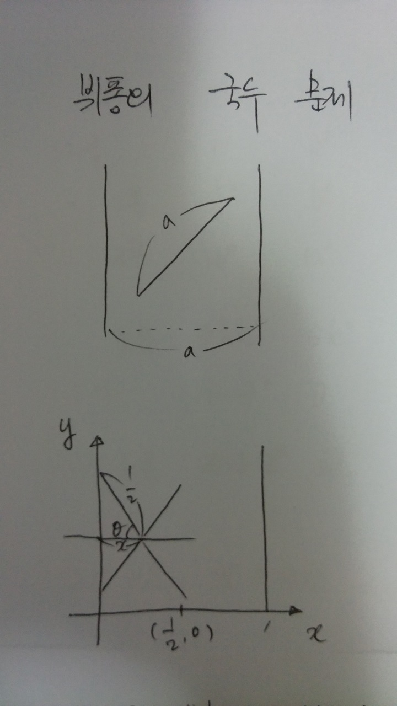
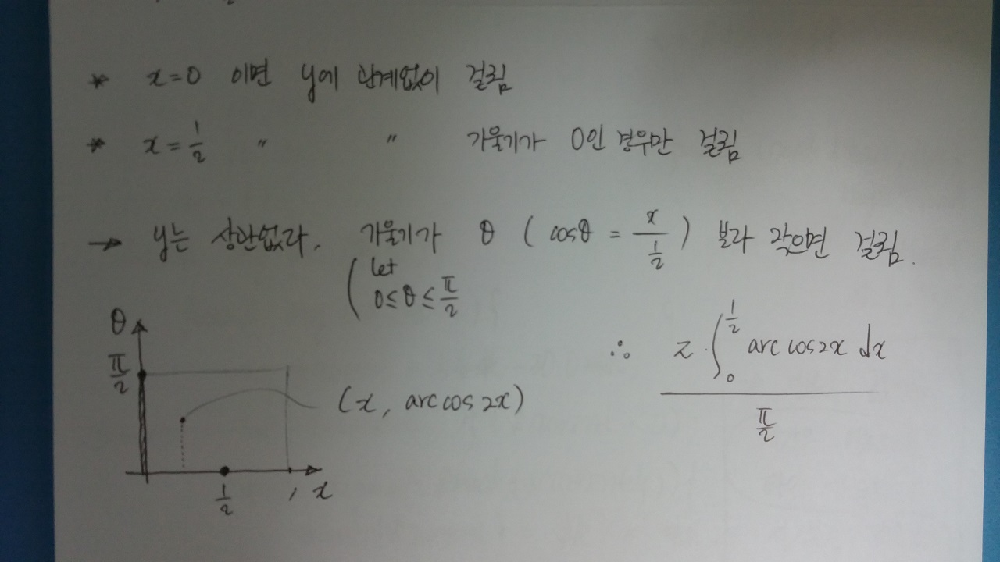
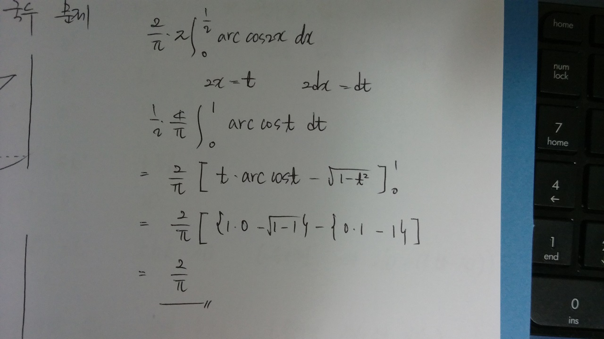
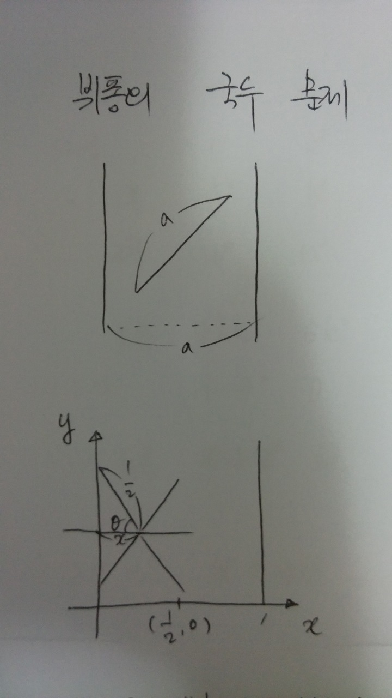
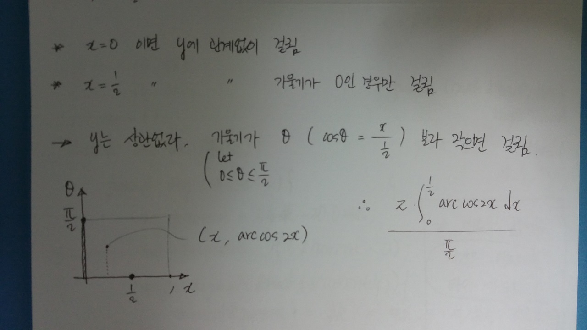
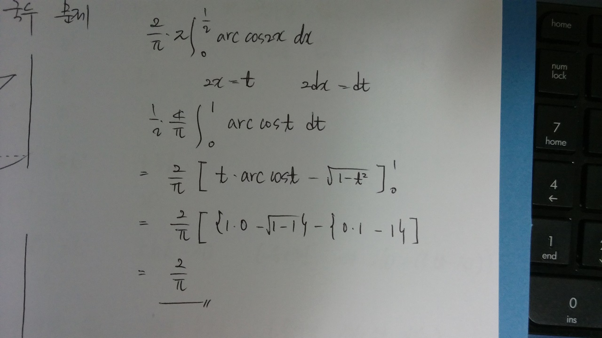

뷔퐁의 바늘 문제
6/17/2015
나머지 반은 어떻게 생각할까 에 뷔퐁의 바늘 문제가 소개되어 있다.
일정한 너비 마다 무한히 긴 서로 평행한 직선들이 있다고 가정한다. (감옥의 창살을 생각하자)란 문제이다.
너비와 같은 길이의 바늘을 떨어뜨릴 때 직선에 닿을 확률은 얼마인가
물론 책에는 우아하고 세련되며 직관적이고 명확한 풀이가 제시되어 있지만
그리 똑똑하지 못한 내 수준으로도 어찌어찌 다른 풀이 방법을 찾은 듯 하여 일단 답은 맞는 듯 하여 남겨본다.
그리 똑똑하지 못한 내 수준으로도 어찌어찌 다른 풀이 방법을 찾은 듯 하여 일단 답은 맞는 듯 하여 남겨본다.
먼저 직선의 너비와 바늘의 길이를 1 라고 가정하자.
이제 어떤 경우에 직선와 바늘이 접점을 가지는지를 생각해 본다.
\(y\)축과 만나는 경우의 바늘의 중심과 \(y\) 축과의 거리를 \(x\) 라고 하고 바늘과 \(x\)축과의 각도를 \( \Theta \) 라고 하자.

바늘 중심의 \(x\) 좌표가 0 위에 있으면 무조건 만나게 된다.
바늘 중심의 \(x\) 좌표가 \(\frac{1}{2}\) 위에 존재할 경우 (바늘의 전체 길이가 1 이므로) 각도가 0 - 즉 완전히 누운 상태에서만 만날 수 있다.
바늘 중심의 \(x\) 좌표가 0과 \(\frac{1}{2}\) 사이라면 기울기가 위에서 구한 \(\Theta\) (이때 \( \cos (\Theta) = \frac{x}{\frac{1}{2}} \) ) 보다 작으면 접점이 생긴다.

결국 바늘이 떨어지는 전체 확률은 \(x\) 가 \([0, 1]\), \(y\) 가 \([0, \pi/2]\) 이므로 \(\frac{\pi}{2}\) 이고
접점이 발생할 영역은 \(y = arc cos 2x\) 의 아래 영역이 된다.
\(arc cos\) 적분이 끼여들어가긴 했지만 책에서 제시된 직관적인 증명 보다 내 눈에는 이 방식이 더 단순하게 보인다.

이제 어떤 경우에 직선와 바늘이 접점을 가지는지를 생각해 본다.
\(y\)축과 만나는 경우의 바늘의 중심과 \(y\) 축과의 거리를 \(x\) 라고 하고 바늘과 \(x\)축과의 각도를 \( \Theta \) 라고 하자.

바늘 중심의 \(x\) 좌표가 0 위에 있으면 무조건 만나게 된다.
바늘 중심의 \(x\) 좌표가 \(\frac{1}{2}\) 위에 존재할 경우 (바늘의 전체 길이가 1 이므로) 각도가 0 - 즉 완전히 누운 상태에서만 만날 수 있다.
바늘 중심의 \(x\) 좌표가 0과 \(\frac{1}{2}\) 사이라면 기울기가 위에서 구한 \(\Theta\) (이때 \( \cos (\Theta) = \frac{x}{\frac{1}{2}} \) ) 보다 작으면 접점이 생긴다.

결국 바늘이 떨어지는 전체 확률은 \(x\) 가 \([0, 1]\), \(y\) 가 \([0, \pi/2]\) 이므로 \(\frac{\pi}{2}\) 이고
접점이 발생할 영역은 \(y = arc cos 2x\) 의 아래 영역이 된다.
\(arc cos\) 적분이 끼여들어가긴 했지만 책에서 제시된 직관적인 증명 보다 내 눈에는 이 방식이 더 단순하게 보인다.
